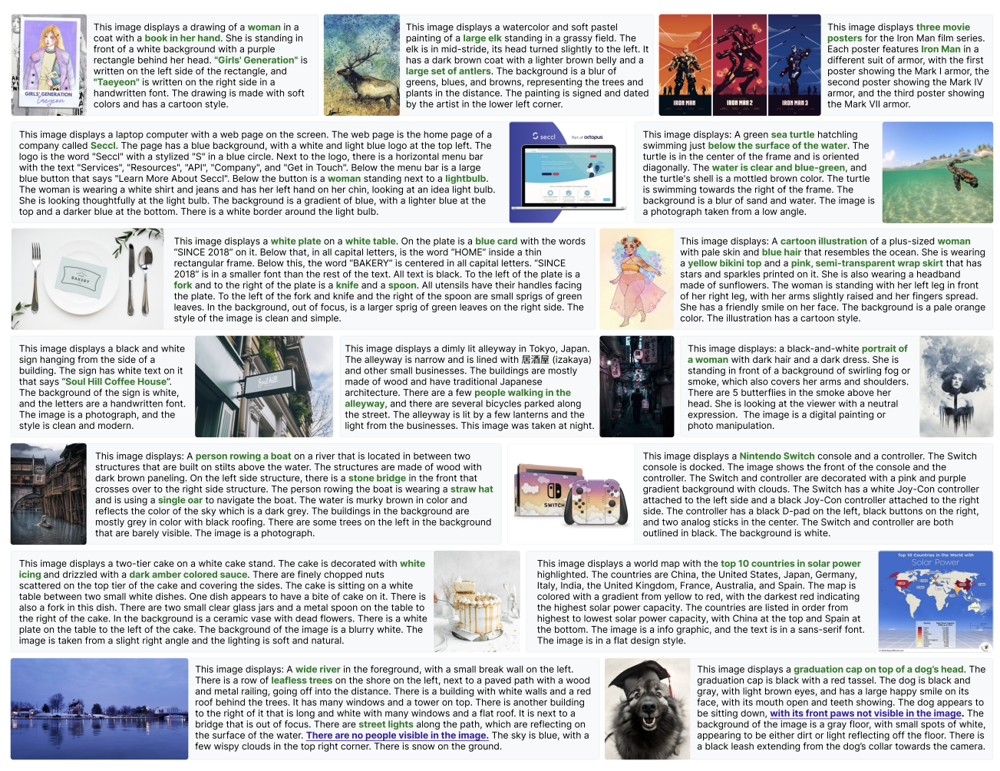

|
Sukriti Paul
I'm a PhD student in Computer Science at the University of Maryland, College Park, specializing in computer vision and representation learning. At Prof. Tom Goldstein's Lab, my research focuses on developing innovative solutions at the intersection of vision tokenization efficiency and multimodal AI systems.
Previously, I completed my Master's in Computer Science at the University of Maryland, College Park. I carry around 5 years of industry experience spanning AI, where I've consistently delivered impactful solutions—from predicting structures of 248K novel proteins at NonExomics to developing an AI diagnostic system for medical imaging at IISc that received Bill & Melinda Gates Foundation funding. At American Express, I implemented data engineering solutions using billion-scale customer and merchant data across industries to boost customer engagement in our enterprise recommender system. Throughout my research journey, I've closely worked with my previous advisors Prof. Sudhakaran Prabakaran (NonExomics), Prof. Chandra Sekhar Seelamantula (IISc) and Prof. K.R. Ramakrishnan (IISc).
Home •
Experience
Email /
Resume /
Scholar /
Github /
LinkedIn /
Twitter
|

|
Research
My research spans multiple efficiency approaches for vision tokenizers, including adaptive token length mechanisms, quantization techniques, and optimized caching strategies. I'm interested in understanding how tokenization quality affects downstream tasks ranging from image generation to multimodal understanding. My current research focus is on flexible length image tokenisation approaches, investigating how we can reduce computational requirements while maintaining representational power.
I'm equally passionate about data composition for generative vision models. I've been a core creator of the PixelProse dataset—a massive 16M+ image collection with high-quality synthetic captions utilized by Idefics3, Janus, JanusFlow, and DeepSeek-VL2. Our work provides critical insights into how data quality and diversity shape vision-language capabilities.
|
- CMSC828I: Advanced Techniques in Visual Learning & Recognition
- CMSC723: Graduate Natural Language Processing
- CMSC848O: Seminar on Long-Context Language Models
- CMSC828P: AI/ML at Scale
|
- CMSC764: Advanced Numerical Optimization
- CMSC838C: Advances in XR
- CMSC848B: Computational Imaging
- CMSC828G: Systems for Machine Learning
|
Projects
|

|
From Pixels to Prose: A Large Dataset of Dense Image Captions
Vasu Singla*, Kaiyu Yue*, Sukriti Paul+, Reza Shirkavand+, Mayuka Jayawardhana, Alireza Ganjdanesh, Heng Huang, Abhinav Bhatele, Gowthami Somepalli, Tom Goldstein
arXiv /
HF dataset
Developed a comprehensive 16M+ image dataset with rich synthetic captions, enhancing multimodal AI training through rigorous quality control and ethical safeguards while enabling significant improvements in text understanding for vision-language models.
|

|
PixelProse Power Up: Text-Focused Enhancement for Diffusion Models
Sukriti Paul,
Vasu Singla (Project advisors: Ashwinee Panda, Micah Goldblum, Vikash Shewag, Tom Goldstein)
GitHub
Fine-tuning Stable Diffusion 3 Medium at 1M-image scale with extended context window capabilities, employing model and data sharding, latent caching, and distributed training optimizations to target improved text rendering in generated images.
|

|
LlamaGen-Cosmos Training
Sukriti Paul
GitHub
A distributed training implementation for class-conditional image synthesis using LlamaGen architecture with the Cosmos DI8-8 tokenizer. This framework enables efficient multi-node training on pre-cached ImageNet latents, designed for exploring autoregressive image generation model performance at scale.
|

|
Post-Training Quantization of NVIDIA's Cosmos Image Tokenizer
Sukriti Paul (Project advisor: David Jacobs)
GitHub /
Report
Implemented PTQ techniques like logarithmic and per-tensor for the Cosmos tokenizer, showing logarithmic quantization's superior performance (25.15 dB vs 14.84 dB PSNR at 6-bit), while achieving up to 7.8× model size reduction through asymmetric encoder-decoder compression without sacrificing image fidelity.
|

|
Research on nORFs and the Novel Proteins they Encode
Sukriti Paul,
PI & CEO: Dr. Sudhakaran Prabakaran, NonExomics
Funded by Illumina and AWS
At the R&D division of a biotech startup, I develop ML frameworks for Proteogenomics and Structural Genomics data analysis. I work on diverse ML research problems associated with novel Open Reading Frames (nORFs): Structure prediction, protein clustering, subcellular localization, variant prioritization, protein-protein interactions, and the evolution of novel proteins. Under Dr. Matt Wayland, I have contributed to developing our enterprise's cloud and data infrastructure.
No Links (the proprietary algorithms, pipelines, and research ideas are confidential as per CDA.)
|

|
Analysis of Abnormalities in Wireless Capsule Endoscopy Images
Sukriti Paul,
PI: Prof. Chandra Sekhar Seelamantula, Spectrum Lab @IISc
Funded by Bill & Melinda Gates Foundation, Robert Bosch Centre for Cyber Physical System
Worked on classification, semantic segmentation, instance segmentation, clustering, and artificial image synthesis tasks for endoscopic abnormalities present in Wireless Capsule Endoscopy (WCE) images. Our team has developed an end-to-end WCE system that reduces screening time of WCE lesions from ~4 hours to ~8 minutes. We worked in collaboration with The Command Hospital Air Force Bangalore and Kasturba Medical College, Manipal.
Presentation /
Paper /
Video /
Grant /
Resources
|
|
|
Fast Steerable Bilateral Edge Detectors
Sukriti Paul, Prof. Sanjay Ghosh,
PI: Prof. Chandra Sekhar Seelamantula, Spectrum Lab @IISc
A government-funded project on sidewalk detection
A novel, noise-robust and computationally efficient algorithm for real-time bilateral edge detection. By integrating the concept of steerability into the design, we achieve a favorable balance between image accuracy and processing speed. Our approach builds upon Sanjay Ghosh et al.'s work on "Fast Bilateral Filtering Using Fourier Kernels," extending it with directional sensitivity for enhanced edge detection capabilities across various noise conditions while maintaining computational efficiency.
Presentation /
Paper /
Report
|

|
Transliteration of Kannada Text from a Camera Captured Scene-Image on an Android Platform
Sukriti Paul,
PI: Prof. K.R. Ramakrishnan, CVAI Lab @IISc
Funded by IISc
Developed a specialized pre-processing algorithm for raw textual scene images that optimizes input for OCR systems like Tesseract. Enhanced Tesseract's capabilities by training it on diverse Kannada font combinations, significantly improving recognition of Kannada script. Designed a high-performing Convolutional Neural Network for Kannada character recognition that achieved 96.8% accuracy—surpassing state-of-the-art results by approximately 2%. Implemented these advances in a practical Android application that efficiently pre-processes images and transliterates Kannada text using Tesseract tools for mobile platforms.
Report /
Presentation /
Pre-processing Code /
Poster
|
|
Teaching Assistant for CMSC 250: Discrete Structures at University of Maryland, College Park (Spring'25)
|
| |